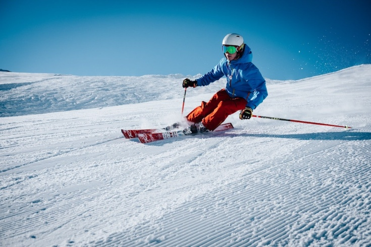
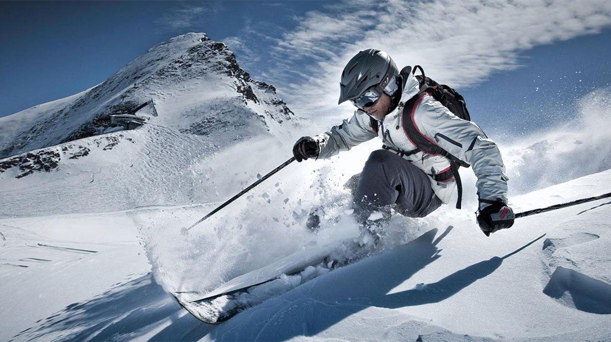
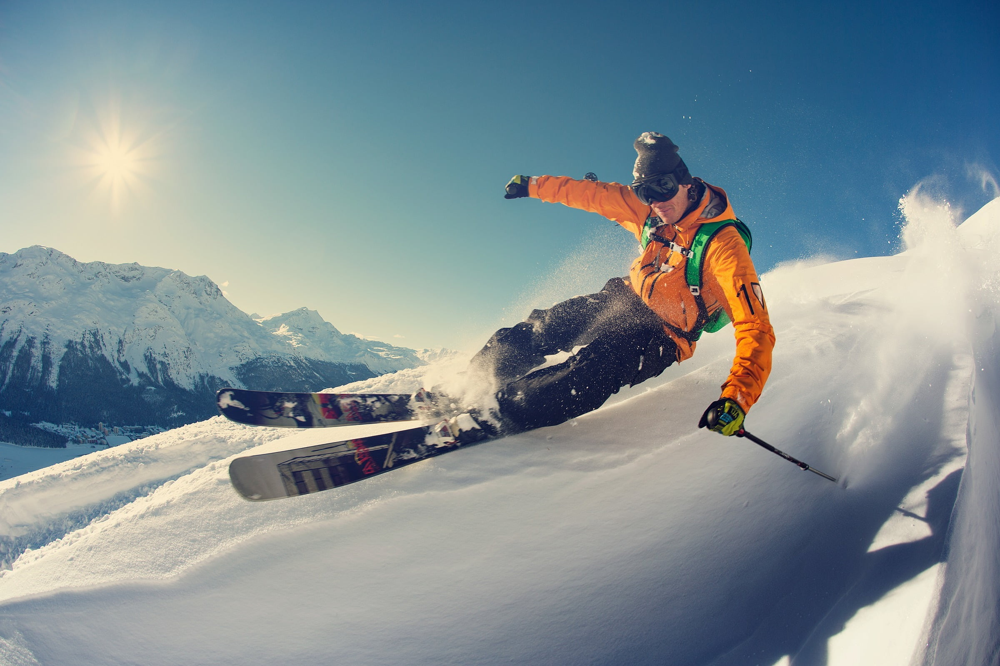
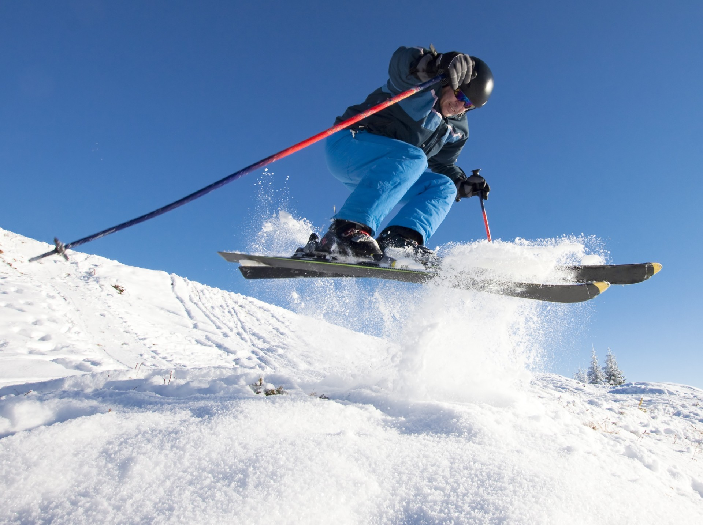
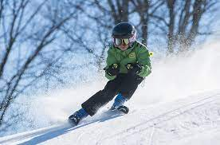
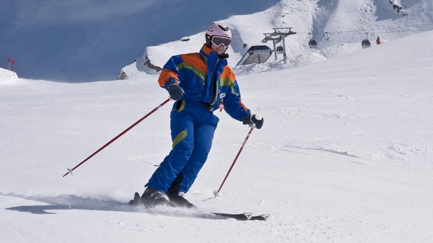
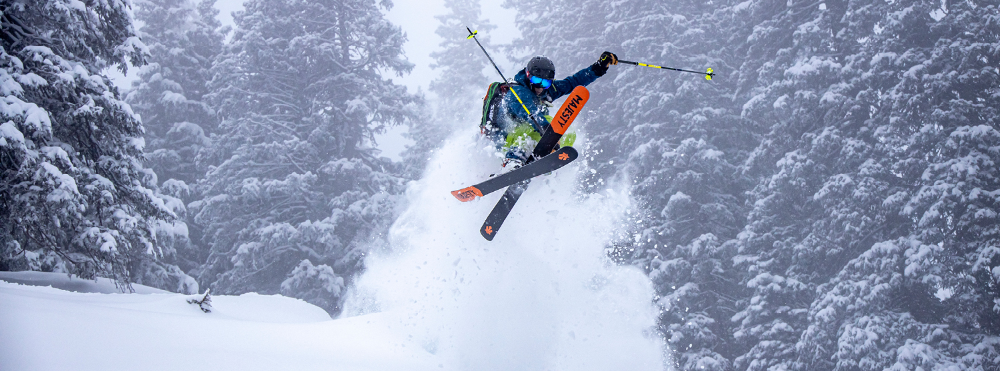
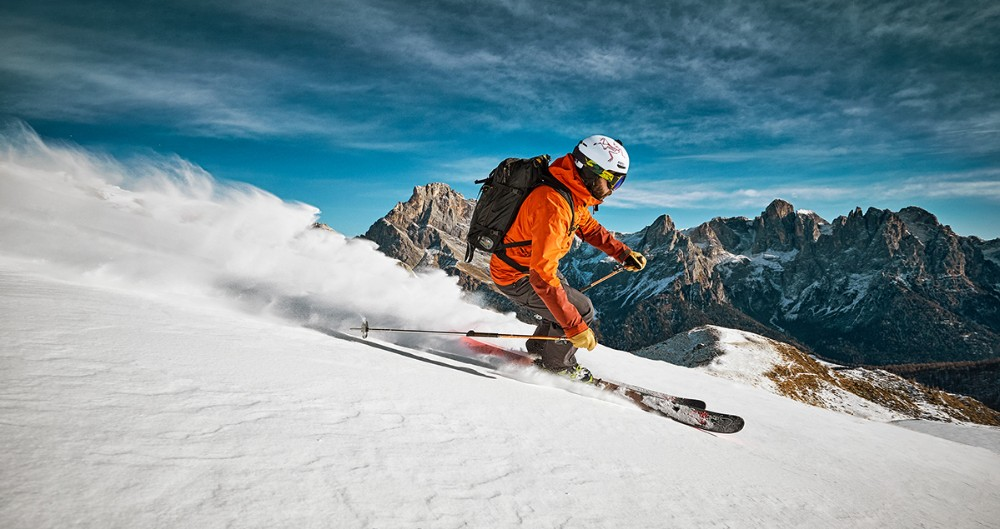

ДВИГАЙСЯ ТОЛЬКО ВПЕРЕД
Горные лыжи

ТРАССА ДЛЯ БЕГОВЫХ ЛЫЖ
На ГЛК GK расположена отличная трасса для беговых лыж общей протяженностью около 5 километров. Общий перепад высот составляет 170 метров.
Суммарная длина всех 9ти подъемов более полутора километров. Трасса отлично подходит как для любителей, так и для профессионалов.
ФРИРАЙД – ДЛЯ НАСТОЯЩИХ ЦЕНИТЕЛЕЙ!
Настоящим раем для лыжников станут Фрирайд-зоны.
На ГЛК GK в настоящий момент находится большая площадь для фрирайда.
Вечернее катание по освещенной фонарями трассе, принесет заряд положительных эмоций на оставшийся вечер.

Галерея






